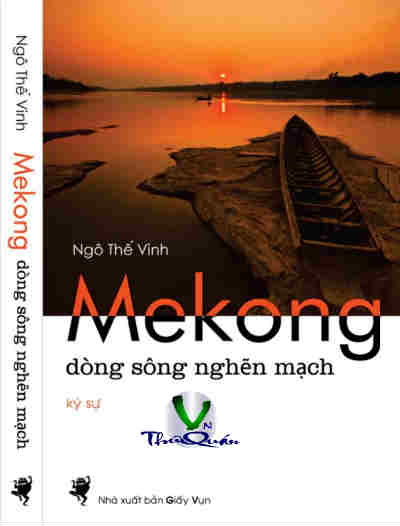

« Back
Mekong Dòng Sông Nghẽn Mạch
By Ngô Thế Vinh

LỜI DẪN NHẬP
TƯỜNG TRÌNH TỪ VÂN NAM ĐẾN VỚI CON ĐẬP MẠN LOAN
CON ĐẬP ĐẦU TIÊN, CON ĐẬP LỊCH SỬ
LƯỚI CÁ TRÊN SÔNG MEKONG
ĐƯỜNG LÊN TƯ MAO
LÀO PDR.COM ĐI RA TỪ LÃNG QUÊN
TỪ NAM NGUM TỚI ĐIỆN KHÍ HÓA NƯỚC LÀO
MƯỜNG LUÔNG KHU DI SẢN THẾ GIỚI
UDON THANI NGÀY NÀO
VỰC DẬY TỪ TRO THAN ĐI QUA NHỮNG CÁNH ĐỒNG CHẾT
NAM VANG: CÂU LẠC BỘ KÝ GIẢ NGOẠI QUỐC
TỪ ĐẠI HỌC PHNOM PENH TỚI ĐẠI HỌC HÀ NỘI
TRÊN SÔNG TONLÉ SAP: CỘNG ĐỒNG CHĂM ISLAM
TỪ CẦU MỸ THUẬN 2000 TỚI CÂY CẦU CẦN THƠ 2008
Ô NHIỄM TRÊN NHỮNG XA LỘ NÂU
BỆNH VIỆN ĐA KHOA CẦN THƠ HƠN 30 NĂM CŨ
QUA CẦU MỸ THUẬN MÀ VẪN KHÔNG QUÊN PHÀ
THAY KẾT TỪ CÂU CHUYỆN CỦA DÒNG SÔNG
SÁCH DẪN